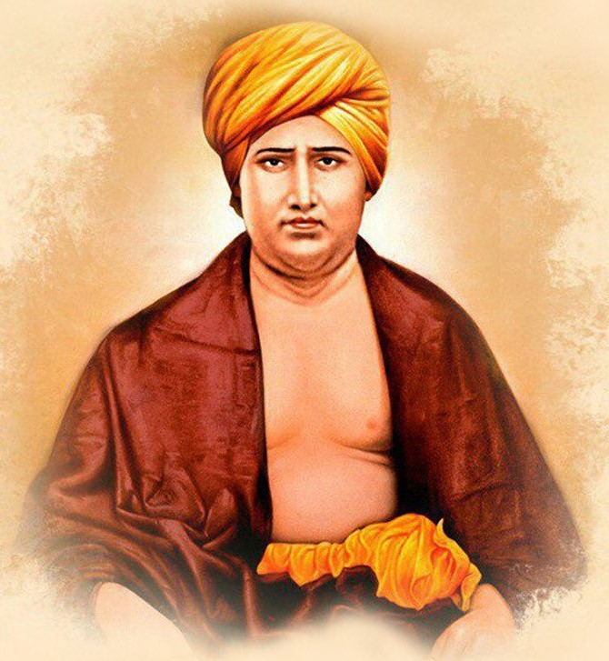

Social Reforms

He was against idol worship, caste system, ritualism, fatalism, infanticide, sale of grooms etc. he also stood for the liberation of women and upliftment of depressed class. Keeping in mind the supremacy of Vedas and Hindus, he opposed Islam and Christianity and advocated for Suddhi movement to reconvert the other sects to Hindu order. Swami Dayananda Saraswati sincerely believed that through the spread of Vedic education the urge of regeneration of Indian society could be met. The gurukulas, Girl’s Gurukulas and DAV colleges were the most significant contribution of Dayananda. In fact the efforts of Swami Dayanananda freed the people from the clutches of western education. Dayananda Saraswati also contributed to the growth of democracy and national awakening. It is said that “political independence was one of the first objectives of Dayananda. Indeed he was the first man to use the term Swaraj. ” He was the first to insist on people to use only swadeshi things manufactured in India and to discard the foreign things. He was the first to recognize Hindi as national language of India.” Dayananda Saraswati was the strong votary of democracy and self government. He declared that good Government was no substitute for self-government. He paid utmost attention to the regeneration of rural India. In many ways Dayananda anticipated Mahatma Gandhi in his constructive programme. His Arya Samaj was constituted through the procedure of democratic election from the below to bottom. Swami Dayananda represented a transitional stage and inaugurated future developments with his vision of a complete overhaul of Hindu Society through education. Dayananda founded the first Arya Samaj at Bombay in 1875 and another at Lahore in 1877. The Arya Samaj was the institutional symbol of Dayananda’s philosophy. The Samaj had done splendid work in social and educational field.